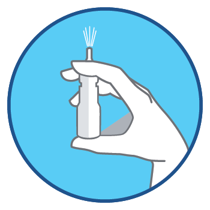
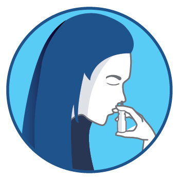
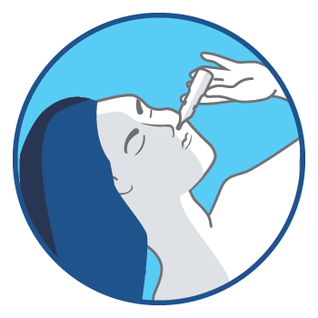
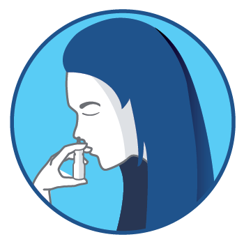
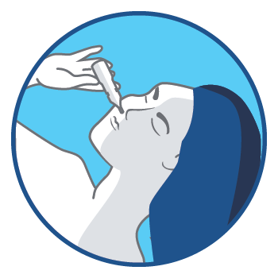
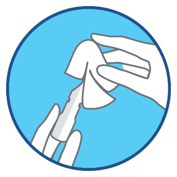

Kada nam je zapušen nos često imamo osećaj kao da su nam i druga čula blokirana: ne osećamo ukus hrane, nemamo apetit, zaboravljamo jutarnji mirs kafe i da li smo stavili parfem ili ne. Jedino o čemu možemo da mislimo i čemu možemo da se posvetimo je pitanje – dokle više?
Operil® efikasno deluje na iritiranu sluzokožu nosa i ublažava tegobe izazvane upalama ili alergijom.
Naše višegodišnje iskustvo, stalno usavršavanje i posvećenost kvalitetu naših proizvoda čine Operil® pravim izborom bilo da patite od:
Iako ih podnose daleko teže nego odrasli, deca mnogo češće oboljevaju od različitih upala i infekcija. Čim krenu u vrtić ili školu, kako zbog veće izloženosti organizma, tako i zbog kontakta sa drugom decom, dolazi do izraženije pojave zaraznih bolesti. Bilo da se radi o alergiji, prehladi ili upali srednjeg uha*, prvi simptom koji je zajednički svima jeste zapušen nos.
U tim situacijama će Vaše dete postati neraspoloženo i razdražljivo, a na Vama je da mu ukažete pomoć.
Kod dece, kao i kod odraslih upale nosa mogu biti uvod u razvoj bolesti gornjih disajnih puteva, pa ih je vazno lečiti na vreme kako ne bi došlo do komplikacija.
Operil® P kapi za nos 0,025% za decu namenjene su deci od 6 do 12 godina, s tim što ih uz preporuku lekara mogu koristiti i deca od 2 do 6 godina. Preporučena primena je 1-2 kapi u svaku nozdrvu 2 do 3 puta dnevno.
Kapi se pravilno primenjuju u ležećem iii sedećem položaju sa glavicom zabačenom unazad, okrenutom na levu ili desnu stranu u zavisnosti od nozdrve u koju se nakapava. Važno je zadržati taj položaj bar 1 minut nakon doze kako bi lek mogao da dođe do sluzokože nosa i sinusa.
Operil® P kapi za nos deluju i do 12h i olakšavaju san tokom cele noći. Operil® P sprej za nos 0,025% za decu namenjen je deci od 6 do 12 godina.
Preporučena primena je 1-2 inhalacije spreja u svaku nozdrvu 2 do 3 puta dnevno.
Kako prilikom primene terapije kapima deca često imaju problem da ostanu mirna, sprej vam može biti lakši za korišćenje.
Operil® P sprej za nos koristi se u stojećem ili sedećem položaju i ne cedi se niz grlo. Mikročestice spreja obložiće sluzokožu nosa i sinusa i tako će sprečiti širenje upale na sinuse, donje disajne puteve i uho. lz navedenih razloga, ovaj sprej je adekvatan izbor za decu.
| Primena OPERIL® P spreja kod zapušenog nosa ili curenja iz nosa: | Primena OPERIL® P kapi kod upale srednjeg uha: | ||
|---|---|---|---|
| Detetu prvo izduvajte nos. | Detetu prvo izduvajte nos. | ||
|  | Pritisnite ravnomerno pumpicu dok se ne pojavi raspršena maglica. | Nagnite detetu glavu nazad i u stranu. | |
|  | Nagnite detetu glavu napred ka grudima, stavite nastavak u nos, ušpricajte dozu i neka dete udahne kroz nosnu sluznicu. |  | Ukapajte preporučenu dozu u jednu nozdrvu. |
|  | Isto ponovite na drugoj nozdrvi. |  | Isto ponovite na drugoj nozdrvi. |
|  | Obrišite nastavak za nos. | Neka dete normalno diše. | |